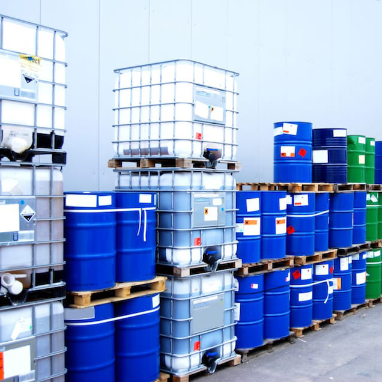

مواد اولیه شیمیایی صنعتی
واردات مواد شیمیایی آزمایششده برای کاربردهای صنعتی، به صورت قابل اعتماد، کارآمد و متناسب با الزامات فرآیندهای تولید مدرن, مواد شیمیایی صنعتی با کیفیت بالا از منابع بینالمللی، ایدهآل برای تولید، فرآوری و کاربردهای فنی در صنایع مختلف.